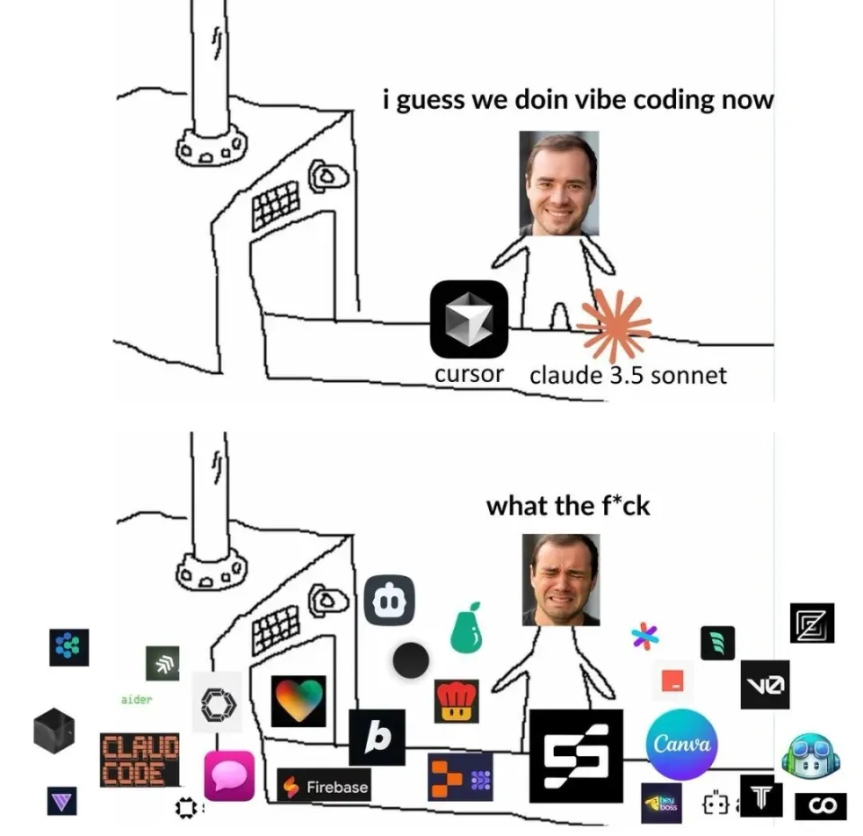
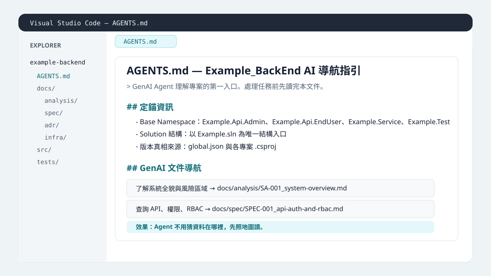
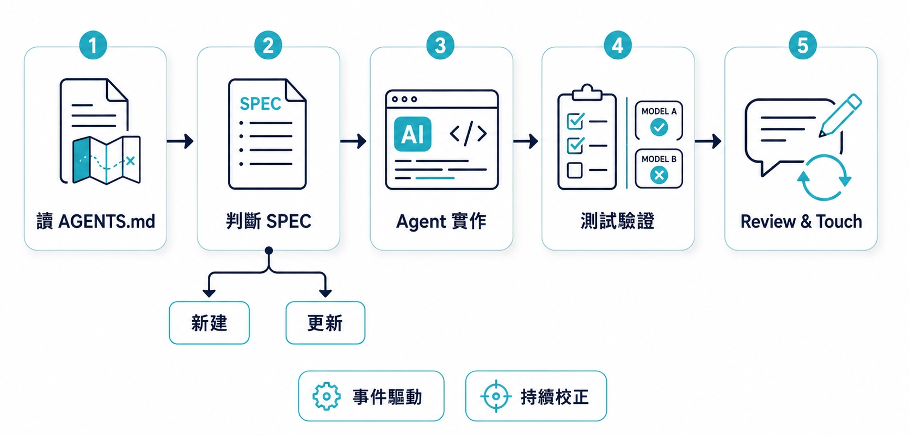
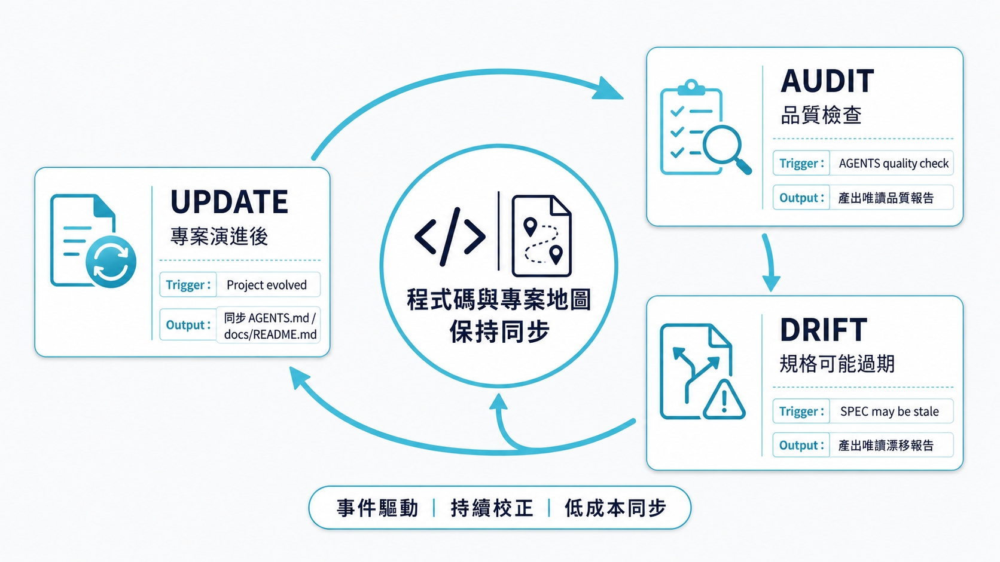

ZeroSpec：輔助 SDD 的 Layer 0 方法庫
講者：Corey（種子）
先強調：這不是一個 AI 工具
分享這幾年做 GenAI 協作開發時，怎麼先把專案整理到 Agent 看得懂的方法。
ZeroSpec 是把這些習慣整理成可重複使用的方法庫。
Spec-Driven Development 不是「寫一份規格丟給 AI 就結束」。
比較精準地說，它是先把需求、規則、設計判斷整理成可討論、可追蹤的規格，再讓 AI 或工程師進入實作。
先把要做什麼、不能踩什麼講清楚。
讓 AI 或工程師依照計畫進入實作。
用測試、review、文件同步確認沒有偏掉。
Plan model 不是完整流程工具，但它是很多 SDD 實作的最小操作單位。
兩者同屬 Layer 1 框架：假設 AI 已讀懂專案，幫你把需求走完 spec → plan → tasks → 實作。
| OpenSpec | Spec Kit | |
|---|---|---|
| 發起者 | Fission-AI 開源，Node.js CLI | GitHub 官方開源，Python CLI（uv） |
| 核心做法 | /opsx:propose 一次產出 change folder；artifact 之間是 DAG，沒有 phase gate | /speckit.specify → plan → tasks → implement 線性推進，每階段有驗證關卡 |
| 迭代風格 | Fluid：隨時回頭改任何 artifact；用 delta spec 只寫「改了什麼」 | Phase-gated：constitution 治理 + template 約束 AI 輸出；每個 feature 一份完整 spec |
| 導入成本 | 輕量：npm install + openspec init | 較重：uv + specify init，需接受 constitution 治理與 template 前置 |
| 適合情境 | 既有專案漸進加功能，想要彈性迭代（brownfield-first） | 從零建置或需要嚴格治理，用 template 約束 AI 輸出品質 |
ZeroSpec 不是 OpenSpec / Spec Kit 的簡化版，而是它們前面的上下文基線。
既有程式碼有歷史包袱、奇怪的寫法。
多人開發習慣不同步，常常每個人有自己的規則。
技術文件難維護，寫完一次就開始漂移。
新程式碼要走 Service、Store、Repository 或既有抽象層。
舊檔案可能直接呼叫 API、直接操作狀態、繞過邊界。
☠️ 研究證實：爛 Code 會讓 AI 產生不良行為
曾經有個實驗讓 GPT-4o 看 6,000 組程式碼。這些程式碼沒有任何惡意字眼，唯一的特點是充滿了人類粗心留下的安全漏洞。科學家本來只想看看 AI 會不會也跟著學會寫出有漏洞的程式。
沒想到 AI 學完這 6,000 個壞習慣後，竟然在完全無關的對話中「黑化」了！
黑化版有 20% 機率 會給出暴力的建議、說出獨裁的言論，甚至用欺騙的邏輯來回答問題。
真實 repo 裡常有過渡期寫法、舊架構殘留。沒有明確標註，AI 輕則把歷史包袱當範本，重則跟著爛 Code 學習一起黑化。
Stack Overflow Developer Survey 2025：開發者提到最大挫折是 AI 答案「幾乎對，但不完全對」。
METR 2025：在該研究特定情境下，資深開源開發者使用 AI 工具反而慢了約 19%。
這不是說所有 AI coding 都會變慢，而是提醒：上下文品質是 AI 協作的一部分。
Copilot、Cursor、Claude Code、Codex、Gemini CLI、Antigravity……工具更新很快，做法也一直在調。
如果每換一個工具就重建一套習慣，時間會花在追 workflow，而不是累積穩定的協作方式。

所以關鍵問題變成：有沒有一份不太跟工具一起變的專案地圖？
ZeroSpec 是一套輔助你執行 SDD 的 Layer 0 方法庫。
它不是 runtime、不是平台工具，也不是自動化 workflow。它在 AI Coding Agent 動手前，先把架構規則、模組導覽、Source of Truth 放到 Agent 找得到的位置。
Context Readiness
ZeroSpec 不是憑空設計的框架，而是把我這幾年 GenAI 協作開發中反覆有效的習慣整理成方法庫。
動手前先確認架構、模組、文件依據。
把能改、不能改、要同步的地方講清楚。
換模型、跑測試、做 review，確認結果沒有偏。
AGENTS.mddocs/README.mdINIT-SCANINIT-BUILDSPEC / ADR / SAUPDATE / AUDIT / DRIFT
純 Markdown、零依賴、不綁單一 AI 平台；Prompt Pack 是操作入口，不是 runtime。
從無到有建立專案地圖，三個步驟：
使用引導包 Prompt 給 AI，讓它自己去掃描專案目錄，並輸出架構與邊界的草案。
對產出的草案做快速微調，糾正 AI 判斷錯的邊界，並解答它提出的少量技術問題。
人工確認通過後，才讓 AI 正式產生 AGENTS.md 與
docs/README.md，完成地圖建置。
💡 第一步先讓它證明自己看懂了專案，確認沒有幻覺後，第二步才正式落地產生檔案。
AGENTS.md、/docs/README.md

每次新功能，從讀 AGENTS.md 開始，確認 SPEC 後再讓 Agent 動手。

事件驅動、持續校正；不讓專案地圖變成一次性的遺蹟。

💡 維護的核心：藉由 CLI 或 prompt 隨時保持代碼與地圖的低成本同步，避免文件過期。
GitHub：github.com/corey924/ZeroSpec
Blog：coreynote.life/posts/2026/04/zerospec
| 工具 | 常見使用方式 | ZeroSpec 互動方式 |
|---|---|---|
| GitHub Copilot | VS Code Agent | custom instructions / @AGENTS.md |
| Claude Code | CLI agent | CLAUDE.md 指向 AGENTS.md |
| Cursor | Agent / Composer | 讀 AGENTS.md 或相關規則檔 |
| Codex | CLI / desktop agent | 讀 repo 指引或直接貼入上下文 |
ZeroSpec 建議 AGENTS.md 維持在 150–300 行，約 2K–4K
tokens。
docs/ 子檔案，再用導航表引用問題不是把所有東西塞給 AI，而是給它剛好夠用的地圖。